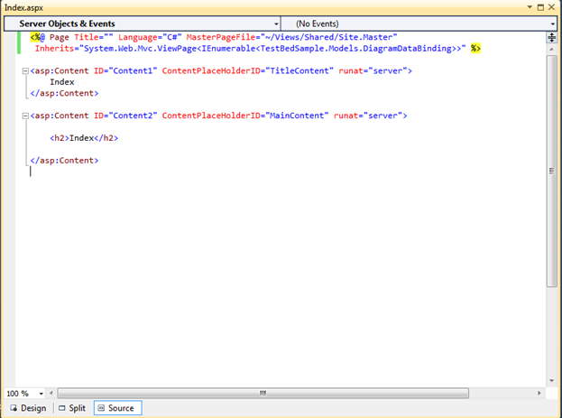

When a view is created, the Inherits attribute will be of type System.Web.Mvc.ViewPage by default. To change this into a strongly typed view, please set this Inherits attribute as System.Web.Mvc.ViewPage<YourNamespace.YourClass>.
Here our model is TestBedSample.Models.DiagramDataBinding. Therefore, update the Index page as given below:
|
View
<%@ Page Language="C#" MasterPageFile="~/Views/Shared/Site.Master" Inherits="System.Web.Mvc.ViewPage <IEnumerable<TestBedSample.Models.DiagramDataBinding>>" %>
|

Figure 150: Default Index View

Figure 151: Strongly Typed Index View